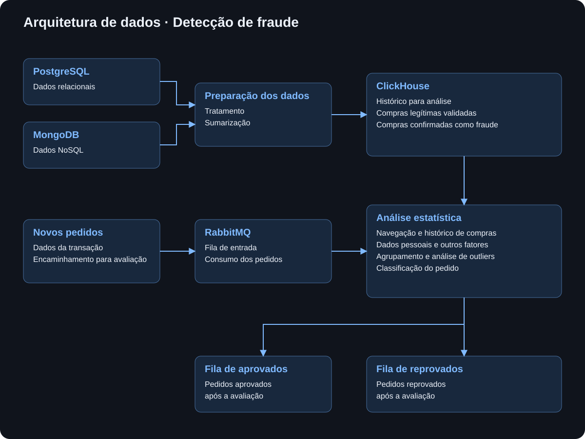

EXPERIÊNCIA PROFISSIONAL
Detecção de fraude com estatística
Sistema antifraude estatístico em tempo real, construído do zero para cruzar comportamento, histórico de compras, navegação e relações entre dados, reduzindo falsos positivos e aumentando a precisão das decisões em menos de um segundo.
Minha contribuição
Desenvolvi toda a solução: arquitetura, coleta, tratamento, cruzamento de dados, engenharia das variáveis, cálculos estatísticos, sistema de pontuação, pipelines de processamento e integração em tempo real. O trabalho uniu minha experiência como Engenheiro e Cientista de Dados, permitindo construir uma solução antifraude própria sem depender de modelos de machine learning prontos ou de ferramentas de IA.
O objetivo não era apenas bloquear fraude. O desafio principal era tomar decisões melhores: reconhecer padrões realmente suspeitos sem impedir compras legítimas. Para isso, construí uma base analítica capaz de relacionar histórico de compras, navegação, fingerprint, comportamento e outros sinais para avaliar cada nova transação.
O problema
A operação utilizava uma combinação entre mecanismos antifraude proprietários e serviços de terceiros. Embora esses sistemas identificassem riscos, ainda existia um problema relevante: compras legítimas podiam ser classificadas como fraude.
Cada falso positivo significava mais do que uma classificação incorreta. Era uma venda real sendo interrompida. A oportunidade estava em consolidar uma base histórica maior e usar o próprio comportamento validado dos clientes para distinguir melhor o que era realmente suspeito.
Da investigação ao modelo estatístico
O projeto começou como uma investigação dos dados. Em vez de partir diretamente para machine learning, procurei padrões de comportamento em compras aprovadas e em transações classificadas como fraude. À medida que esses padrões apareciam, comecei a estruturar um pipeline de detecção.
A solução foi construída exclusivamente com estatística e regras derivadas dos próprios dados. Entre as técnicas utilizadas estavam IQR, percentis, médias ponderadas, clustering, teoria dos conjuntos, grafos e análises baseadas na Lei de Benford. O objetivo de cada técnica era adicionar evidência à decisão, não simplesmente produzir um número isolado.
Comportamento como evidência
A análise considerava muito mais do que os dados finais do pagamento. O comportamento do usuário durante a navegação também ajudava a formar o contexto da compra: tempo de navegação, grupos de interesse, fingerprint, histórico de compras, dados pessoais e relações entre informações.
Algumas fraudes se tornavam claras justamente quando o comportamento de navegação era combinado com outros sinais. Também apareceram padrões recorrentes entre transações fraudulentas e relações entre entidades que passaram a contribuir para as regras de detecção.
Um sistema de pontuação explicável
Cada variável possuía um peso dentro da análise. Esses pesos não eram avaliados isoladamente: informações relacionadas eram agrupadas e a pontuação ganhava ou perdia força à medida que novos grupos de evidência eram combinados.
Isso permitia que o sistema avaliasse não apenas se uma informação parecia suspeita, mas se ela era consistente com o histórico conhecido daquele comportamento. Dados que já haviam aparecido anteriormente em compras legítimas e validadas passavam a servir como evidência a favor da autenticidade de uma nova transação.
O resultado não era uma simples caixa-preta. A solução produzia uma pontuação e conseguia explicar os fatores que levaram à aprovação ou à reprovação da compra. Quando necessário, casos poderiam ainda ser encaminhados para análise de um serviço terceiro.
Arquitetura de dados
Os dados vinham de fontes com papéis diferentes. O PostgreSQL concentrava informações relacionadas às compras, enquanto o MongoDB armazenava dados de navegação e comportamento. Esses dados eram coletados e tratados por pipelines de ETL e consolidados no ClickHouse.
O ClickHouse foi escolhido para permitir consultas analíticas com latência muito baixa. Consultas importantes para a avaliação podiam ser executadas em aproximadamente 0,2 segundo, tornando possível usar um histórico amplo durante a decisão sem comprometer a experiência de checkout.

Decisão em menos de um segundo
Cada nova compra era publicada no RabbitMQ. O sistema consumia a mensagem, executava a análise, consultava o histórico necessário, atualizava as informações correspondentes e publicava o resultado da decisão.
Todo esse processo acontecia em menos de um segundo. Isso era essencial porque a avaliação fazia parte do fluxo da compra e não poderia criar uma espera perceptível para o cliente.
Quando o histórico muda a decisão
Um dos pontos mais importantes da solução era conseguir provar, com base no histórico, que uma informação aparentemente suspeita já havia participado anteriormente de compras legítimas. Essa memória comportamental reduzia a dependência de regras rígidas e ajudava a evitar que um cliente real fosse bloqueado apenas porque uma variável isolada parecia anormal.
Quanto maior e mais consolidada ficava a base histórica, maior era a quantidade de evidências disponíveis para avaliar cada nova compra. O próprio crescimento do histórico ajudava a melhorar progressivamente a qualidade da decisão.
Um caso de aproximadamente 60 mil
Em uma das situações mais marcantes do projeto, uma compra de aproximadamente 60 mil apresentou inconsistências suficientes para ser bloqueada pela solução estatística. Um mecanismo antifraude terceiro havia aprovado a mesma transação.
O episódio mostrou o valor de analisar a compra no contexto específico do comportamento e das relações presentes nos dados da própria operação, em vez de depender exclusivamente de uma avaliação externa.
Realmente essa compra era uma fraude.
Redução dos falsos positivos
A consolidação dos dados e o sistema de pontuação permitiram reduzir em aproximadamente 97% os falsos positivos observados no processo antifraude. Em outras palavras, compras legítimas que antes poderiam ser interpretadas como suspeitas passaram a ser reconhecidas com muito mais precisão.
O ganho não veio de tornar o sistema mais permissivo, mas de aumentar a quantidade e a qualidade das evidências utilizadas em cada decisão. O sistema passou a diferenciar melhor comportamento legítimo de padrões realmente associados a fraude.
Impacto no negócio
O projeto teve impacto direto na capacidade de aprovar compras legítimas sem abrir mão da proteção contra fraude. Segundo os resultados observados durante a operação, a evolução da solução esteve associada a um aumento de aproximadamente 20 milhões no faturamento anual, ao mesmo tempo em que a precisão da detecção foi aprimorada.
Esse resultado mostrou que antifraude não precisa ser tratado apenas como mecanismo de bloqueio. Uma decisão mais precisa também protege receita: reconhecer corretamente um bom cliente pode ser tão importante quanto identificar uma tentativa de fraude.
Por que esse projeto foi especial
Esse projeto reuniu áreas que normalmente aparecem separadas: Engenharia de Dados, Ciência de Dados, estatística, análise comportamental, grafos, bancos analíticos e processamento em tempo real.
Construir cada etapa — da coleta dos dados até a lógica estatística e a resposta da transação — permitiu transformar uma investigação de padrões em um sistema de produção com impacto direto no negócio. Foi justamente essa combinação entre investigação, engenharia e resultado que tornou o projeto um dos trabalhos mais marcantes da minha trajetória.